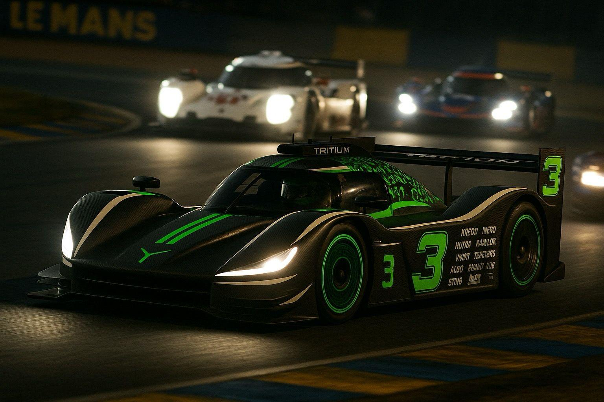
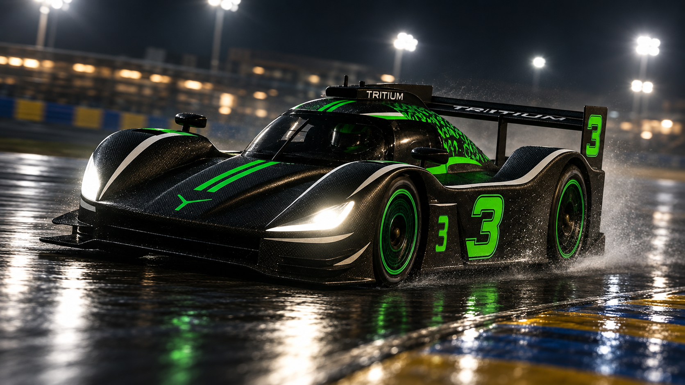
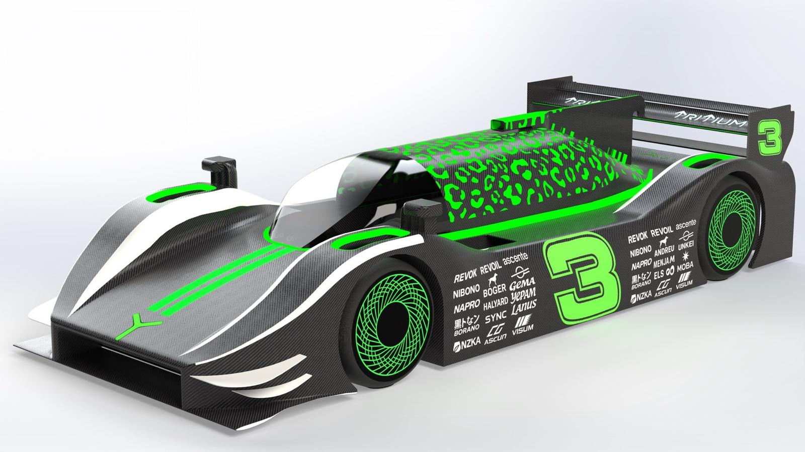

FIAS
A.01PYRAMIDAL CRASH STRUCTURE
LMH CRASH
Composite failure,
made visible.
Crash-structure development around a Le Mans Hypercar concept, with FIAS treated as a standalone energy-management component.
- CONCEPT + CAD GEOMETRY
- FIAS PYRAMIDAL ITERATION
- COMPOSITE TUBE VALIDATION CONTEXT